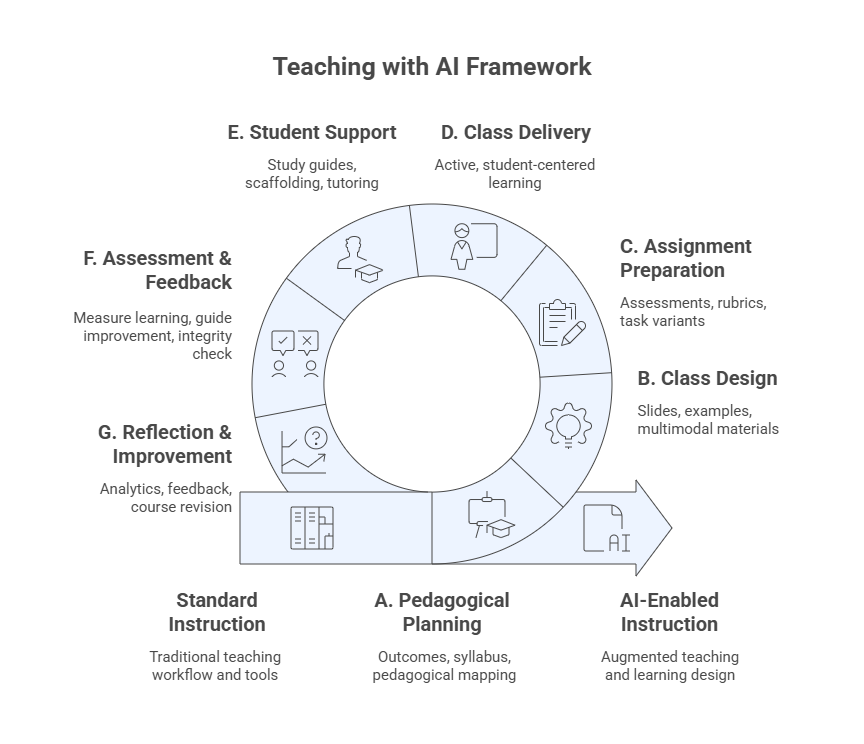
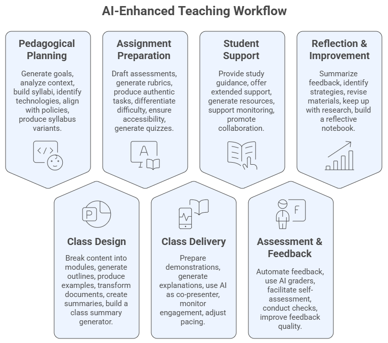
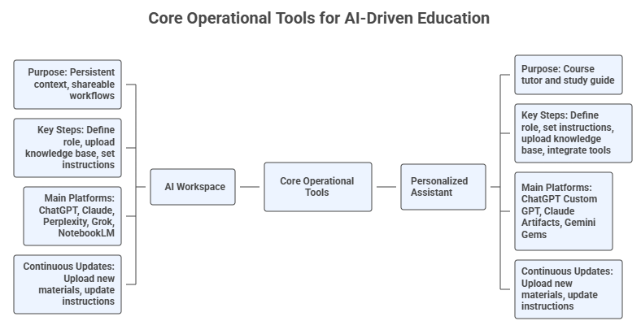

Teaching with AI — Prompt Library#
Welcome#
Welcome to the Prompt Library for Teaching with AI, part of the FGCU AI Academy led by the Dendritic Institute for Human-Centered AI & Data Science at Florida Gulf Coast University.
This library provides ready-to-use prompts and templates to help instructors apply Generative AI across the teaching and learning cycle — from planning and design to delivery, assessment, student support, and reflection.
Rather than focusing on theory, the Prompt Library emphasizes practical, hands-on use of AI tools for real instructional tasks.
The Instrumental Augmentation of Teaching with AI#
The Teaching with AI Framework provides a structured, operational view of how generative AI can be integrated into each phase of the teaching process. Rather than altering pedagogy, it highlights where AI can add efficiency, creativity, and support across planning, design, delivery, assessment, student support, and reflection.
This framework structures classical phases of teaching into seven parts as AI‑supported processes, emphasizing the operational integration of GenAI at each step.

This library provides a variety of prompts related with the foundation for the instrumental use of Generative AI (GenAI) across the entire teaching workflow. It is built upon the background knowledge from the AI Literacy Program (Prompt Engineering, Context Engineering, and Foundational Models) and the full Teaching with AI program of the FGCU AI Academy.
The picture below contains a summary of the main modules of our framework and the main tools and deliverables of each step.

Structure and Approach#
A multi-layered, workflow-driven program for operational AI integration in higher education
The Prompt Library for Teaching with AI is built as a practical, operational, and iterative set of prompts for integrating generative AI into every phase of the teaching and learning cycle presented previously. Unlike pedagogical theory–oriented programs, this library focuses on how instructors actually use AI prompts systematically, responsibly, and efficiently within real teaching workflows.
Across eight modules, instructors progressively build two persistent tools:
The AI Workspace (Project) – your design and development environment for planning, creating, auditing, and improving course materials. The main platforms to be used to create AI workspaces are ChatGPT, Perplexity, Claude, and Grok).
The Course Personalized Assistant (PA) – your student-facing AI tutor for explanations, study support, and assignment clarification (without solving graded tasks). The main platforms to be used to create PAs are Custom GPTs, Claude Artifacts, Gemini Gems, and CoPilot Agents.

The entire program and library is structured as a guided transformation of your teaching practice, with each module updating, refining, and expanding these tools.
What Is This Library For?#
The Prompt Library helps instructors:
Plan courses and class sessions
Design materials and learning activities
Create assignments and rubrics
Support students with AI-assisted scaffolding
Generate feedback and reflections
Improve courses iteratively
Each prompt is designed to be copy-ready and adaptable to your own course context.
How to Use the Prompts#
Pick a task (e.g., design a class session).
Copy a prompt from the library.
Replace the placeholders (e.g.,
[Course Title],[Topic]).Run it in your AI Workspace or assistant.
Review and revise the output before using it in class.
AI supports teaching — it does not replace instructor judgment.
Tool Neutrality#
The prompts are model-agnostic and work across tools such as ChatGPT, Claude, Gemini, Perplexity, NotebookLM, and others. Focus on the workflow, not the platform.
Responsible Use#
All prompts follow the Teaching with AI principles:
Verify AI outputs
Maintain academic integrity
Protect student data
Keep instructor and student tools separate
You remain responsible for how AI is used in your course.
Get Started#
Use the sidebar to explore prompt sets for:
Planning
Design
Assignments
Delivery
Student Support
Assessment
Reflection
Start with Module 1: The Teaching with AI FrameworkI.
About the Instructor – Dr. Leandro Nunes de Castro#
Professor in the Department of Computing and Software Engineering, U.A. Whitaker College of Engineering, FGCU.
Ph.D. in Computer Engineering with 30 years of experience in Artificial Intelligence, Data Science, and Natural Computing.
Director of the Dendritic Institute for Artificial Intelligence and Data Science at FGCU.
Author of various AI and Data Science books and papers, and recognized among the Top 2% most influential researchers in Computer Science worldwide.
Experienced entrepreneur, researcher, and educator with a focus on applying AI for innovation, business, and societal impact.
Active mentor and collaborator with international academic and industry partners.
Acknowledgements#
Developed by Dr. Leandro Nunes de Castro©️ for the Dendritic Institute for Human-Centered AI & Data Science, within the U.A. Whitaker College of Engineering at Florida Gulf Coast University.
Content curated by the team, with support from large language models such as ChatGPT, Claude, Gemini, Perplexity, Gamma.ai, Napkin, and CoPilot, following ethical and pedagogical review.